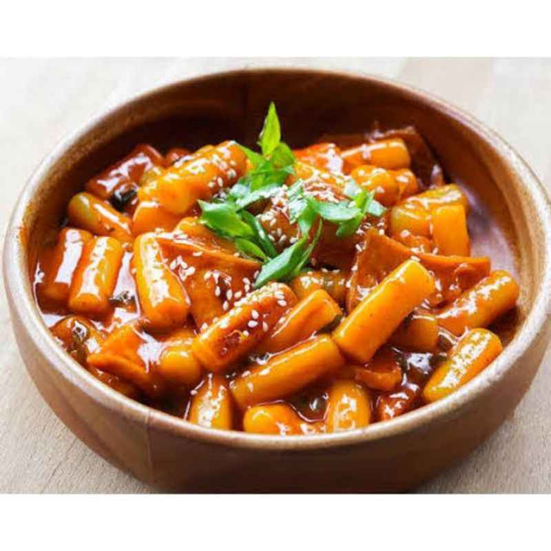

Tteobokki
Tteobokki adalah makanan Korea berupa tteok dari tepung beras yang dimasak dalam bumbu gochujang yang pedas dan manis. Tteok yang dipakai berbentuk batang yang memanjang. Makanan ini juga termasuk dalam makanan internasional.
Read more